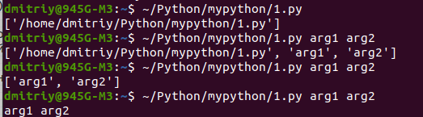

Примеры:
Функции
- Напишите функцию f(x), которая возвращает значение следующей функции, определённой на всей числовой прямой:

def f(x): if x <= -2: return 1 - (x + 2) ** 2 elif -2 < x <= 2: return -x / 2 else: return (x - 2) ** 2 + 1
Напишите функцию modify_list(l), которая принимает на вход список целых чисел, удаляет из него все нечётные значения, а чётные нацело делит на два. Функция не должна ничего возвращать, требуется только изменение переданного списка.def modify_list(lst): l = len(lst) for i in range(l-1, -1, -1): if lst[i] % 2 == 0: lst[i] = lst[i] // 2 else: del lst[i]Другое решение:def modify_list(l): l[:] = [i//2 for i in l if not i % 2]логика такая, так как список l в памяти уже есть и его нужно перезаписать, то есть изменить сам объект списка, поэтому тут я делаю срез всего списка от начала до конца и меняю сам объект. если написать просто l = [i//2 for i in l if not i % 2] в данном случае будет создан новый объект, под него выделена память и переменная l будет уже ссылаться на него, а старая ссылка на исходный объект списка сотрется. т.е происходит не изменение объекта, а перенаправление ссылки у переменной l. я не проверял может и такой вариант сработает но подумал что он учтет занимаемую память и выдаст ошибку, так как была задача одна и там подобный подход выдавал ошибку, а сделал l[:] (изменил сам весь объект) все заработало.дело в том что for и while полезны для больших конструкций, а генератор списков [ for ] введен для того что бы писать коротенькие вещи в одну строку, что б ради одной двух операций внутри цикла не писать по 3-4 строчки кода с обычным циклом.
i%2 выдает либо 0 либо 1. или иначе False True. not i - переворачивает выданный результат. Т.е. в данной ситуации мы должны выполнять действие (i//2) если условие if даст True, но четное число при делении даст остаток 0 (6%2=0 - False) поэтому нам необходимо перевернуть результат (not False - True)
Словарь
Напишите функцию update_dictionary(d, key, value), которая принимает на вход словарь d и два числа: key и value.
Если ключ key есть в словаре d, то добавьте значение value в список, который хранится по этому ключу. Если ключа key нет в словаре, то нужно добавить значение в список по ключу 2∗key. Если и ключа 2∗key нет, то нужно добавить ключ 2∗key в словарь и сопоставить ему список из переданного элемента [value].def update_dictionary(d, key, value): if key in d.keys(): # есть такой ключ d[key] += [value] else: # нет ключа if 2*key in d.keys(): # есть ключ 2*key d[2*key] += [value] else: d[2 * key] = [value]Другое:def update_dictionary(d, key, value): if key in d: d[key] += [value] elif 2 * key in d: d[2 * key] += [value] else: d[2 * key] = [value]Ещё:def update_dictionary(d, key, value): if key not in d: key = 2 * key if key not in d: d[key] = list() d[key].append(value)- Множество, применение одновременно нескольких методов
'''Программа должна считывать одну строку со стандартного ввода и выводить для каждого уникального слова в этой строке число его повторений (без учёта регистра) в формате "слово количество". Порядок вывода слов может быть произвольным, каждое уникальное слово должно выводиться только один раз.''' str = input().lower().split() for i in set(str): print(i, str.count(i)
Напишите программу, которая считывает строку с числом n, которое задаёт количество чисел, которые нужно считать. Далее считывает n строк с числами xi, по одному числу в каждой строке. Итого будет n+1 строк. При считывании числа xi программа должна на отдельной строке вывести значение f(xi). Функция f(x) уже реализована и доступна для вызова. Функция вычисляется достаточно долго и зависит только от переданного аргумента x. Для того, чтобы уложиться в ограничение по времени, нужно избежать повторного вычисления значений.
Моё:n = int(input()) l = [] d = {} for i in range(n): l.append(int(input())) '''Проходим каждый элемент списка Вычисляем функцию и добавляем i и f в словарь Если на следующем элементе уже вычисляли функцию (входит в словарь), то выводим значение для текущего ключа из словаря''' for i in l: if i not in d.keys(): # еще не выполняли функцию по этому числу d[i] = f(i) print(i, f(i)) else: print(i, d[i])Другое:a=[int(input()) for i in range(int(input()))] b={x:f(x) for x in set(a)} for i in a: print(b[i])Ещё:d = {} for _ in range(int(input())): x = int(input()) if x not in d: d[x] = f(x) print(d[x])- Файл, методы работы с файлами
'''Напишите программу, которая считывает из файла строку, соответствующую тексту, сжатому с помощью кодирования повторов, и производит обратную операцию, получая исходный текст.''' with open('/home/dmitriy/Python/mypython/dataset_3363_2 (1).txt') as inf: for line in inf: line = line.strip() # print(line) simvol = '' num = '' str = '' for i in range(len(line)): ''' если символ является цифрой, тогда запоминаем ее в переменной num строкового типа если следующий символ снова цифра, тогда добавляем ее в num если же буква, тогда переменную символа simvol умножаем на int(num) и записывает эту строку в новый файл new_file.txt''' if '0' <= line[i] <= '9': # цифра num = num + line[i] if i == len(line) - 1: # последний символ str = str + simvol * int(num) else: # буква # умножаем предыдущую букву на num и обнуляем num # print('simvol=',line[i], 'type(num)=',type(num),'num=',num) if i != 0: str = str + simvol * int(num) # print('stroka=', str) simvol = line[i] num = '0' inf.close() with open('/home/dmitriy/Python/mypython/dataset_3363_2_modify.txt', 'w') as ouf: ouf.write(str)Не моё:with open('dataset_3363_2.txt', 'r') as f: s = f.readline().strip() i = 0 while i < len(s): j = i + 1 while j < len(s) and s[j].isdigit(): j += 1 print(s[i] * int(s[i+1:j]), end='') i = jПервый символ - гарантированно буква. Перебираем все последующие, пока они цифровые или пока не достигнут конец строки.
После внутреннего цикла j либо указывает на следующую букву, либо на конец строки. В обоих случаях между s[i] и s[j] - цифры, составляющие нужное нам число повторов символа s[i].
Печатаем символ нужное число раз, присваиваем i индекс следующей буквы для новой итерации цикла.- Файл
Напишите программу, которая считывает текст из файла (в файле может быть больше одной строки) и выводит самое частое слово в этом тексте и через пробел то, сколько раз оно встретилось. Если таких слов несколько, вывести лексикографически первое (можно использовать оператор < для строк).word = '' d = {} maksimum = 0 spisok_max = {} maks_word = '' with open('/home/dmitriy/Python/mypython/dataset_3363_3.txt') as f: for line in f: line.strip() # удаляем служебные символы #print(line) for word in line.split(): # заполняем словарь if word in d.keys(): d[word] += 1 else: d[word] =1 # ищем максимальное количество слов for key, value in d.items(): if value > maksimum: spisok_max = {key:value} maksimum = value elif value == maksimum: spisok_max[key] = value for key in spisok_max.keys(): if key > maks_word: maks_word = key print(maks_word, spisok_max[maks_word]) # Со строкой метод append не работает, чтобы добавить строку, используем оператор приращения. # TypeError: can only concatenate str (not "list") to str: # TypeError: unsupported operand type(s) for +=: 'set' and 'list' # for i in stroka переберет строку по буквам, чтобы по словам нужно использовать: for i in stroka.split()Ещё:with open('dataset_3363_3.txt') as inf, open('MostPopularWord.txt','w') as ouf: maxc = 0 s = inf.read().lower().strip().split() s.sort() for word in s: counter = s.count(word) if counter > maxc: maxc = counter result_word = word ouf.write(result_word +' ' + str(maxc))Без словаря, сразу читаем файл и сортируем список слов, чтобы потом первое найденное было лексиграфически впереди.
Оказывается конструкция with является циклом.- Файл, методы, циклы, списки
19:50 - 21:30 (1 ас и 40 минут) Имеется файл с данными по успеваемости абитуриентов. Он представляет из себя набор строк, где в каждой строке записана следующая информация: Фамилия;Оценка_по_математике;Оценка_по_физике;Оценка_по_русскому_языку Поля внутри строки разделены точкой с запятой, оценки — целые числа. Напишите программу, которая считывает исходный файл с подобной структурой и для каждого абитуриента записывает его среднюю оценку по трём предметам на отдельной строке, соответствующей этому абитуриенту, в файл с ответом. Также вычислите средние баллы по математике, физике и русскому языку по всем абитуриентам и добавьте полученные значения, разделённые пробелом, последней строкой в файл с ответом.''' d = {} # ключ - фамилия, значение - список из оценок s = '' num = 0 familia = [] ball = [] mathem = 0 phizik = 0 rus = 0 with open('/home/dmitriy/Python/mypython/dataset_3363_4.txt') as f: s = f.read().strip().split() for l in s: l = l.split(';') # print(l) for i in range(len(l)): if i % 4 == 0: familia.append(l[i]) num = 0 elif (i - 3) % 4 == 0: ball.append((num + int(l[i])) / 3) rus = rus + int(l[i]) else: num = num + int(l[i]) if (i - 1) % 4 == 0: mathem = mathem + int(l[i]) elif (i - 2) % 4 == 0: phizik = phizik + int(l[i]) for i in ball: print(i) print(mathem/len(familia), phizik/len(familia), rus/len(familia))Ещё:koll, a1, b1, c1 = 0, 0, 0, 0 with open('dataset_3363_4.txt', 'r') as inf: for line in inf: line = line.strip().split(';') a, b, c = int(line[1]), int(line[2]), int(line[3]) print((a+b+c)/3) koll += 1 a1 += a b1 += b c1 += c print((a1/koll), (b1/koll), (c1/koll))- Модули
Напишите программу, которая подключает модуль math и, используя значение числа π из этого модуля, находит для переданного ей на стандартный ввод радиуса круга периметр этого круга и выводит его на стандартный вывод.from math import pi print(float(input()) * pi * 2)
- Напишите программу, которая запускается из консоли и печатает значения всех переданных аргументов на экран (имя скрипта выводить не нужно). Не изменяйте порядок аргументов при выводе.
Для доступа к аргументам командной строки программы подключите модуль sys и используйте переменную argv из этого модуля.
import sys print(*sys.argv[1::])
Метод sys.argv выдаст список, где первый элемент - это имя вызвавшей программы, а следующие - это аргументы программы. Поскольку нам не нужно имя программы, то к списку применяем срез.

Первую и вторую команду применили без среза.
3 команду без звездочки внутри print()- Скачайте файл. В нём указан адрес другого файла, который нужно скачать с использованием модуля requests и посчитать число строк в нём.
Используйте функцию get для получения файла.
После получения файла вы можете проверить результат, обратившись к полю text. Если результат работы скрипта не принимается, проверьте поле url на правильность. Для подсчёта количества строк разбейте текст с помощью метода splitlines.
import requests # Прочитаем url со скачанного файла with open('/home/dmitriy/Python/mypython/dataset_3378_2.txt') as f: s = f.read() # print(s) # адрес страницы, которую нужно скачать r = requests.get(s) # простой get-запрос #print('Ответ сервера:', '\n', r.text.splitlines()) # вывод ответа от сервера #print('Ответ сервера:', '\n', r.text) for i in r.text.splitlines(): print(i) print('количество строк=', len(r.text.splitlines()))SyntaxError: unexpected character after line continuation character
Данная ошибка означает, что где-то болтается '\' вне строки. После того, как в print('Ответ сервера:', \n, r.text) \n заключил в кавычки, ошибка исчезла.r = requests.get(s).splitline() # простой get-запрос
AttributeError: 'Response' object has no attribute 'splitline'
Ошибку устранил, когда метод splitline() применил к объекту r.text, а не в команде r = requests.get(s).splitline(), которая вызывала ошибку.
Имеется набор файлов, каждый из которых, кроме последнего, содержит имя следующего файла. Первое слово в тексте последнего файла: "We".Скачайте предложенный файл. В нём содержится ссылка на первый файл из этого набора.
Все файлы располагаются в каталоге по адресу: https://stepik.org/media/attachments/course67/3.6.3/
Загрузите содержимое последнего файла из набора, как ответ на это задание.
url = 'https://stepik.org/media/attachments/course67/3.6.3/' import requests with open('/home/dmitriy/Python/mypython/dataset_3378_3.txt') as f: u = f.read() # u = u[len(url):] # из файла dataset_3378_3.txt получаем полный url, поэтому чтобы использовать его в цикле обрезаем #print('Адрес 1 файла из набора:', url+u) print('Адрес 1 файла из набора:', u) # u = requests.get(url + u) u = requests.get(u) k = 0 # счетчик файлов while True: if u.text.split()[0] == 'We': break u = requests.get(url + u.text) print('k=', k, 'адрес следующего файла:', url+u.text) k +=1 print('Последний файл:\n\n', u.text)u = requests.get(str(url+u))
TypeError: can only concatenate str (not "Response") to str
Так и не смог решить проблему, извращенно сначало первый из набора отдельно вытащил url из файла и только к следующим через цикл посылал запрос. Похоже надо было так: u = requests.get(url + u).textНе моё:
import requests url, name = 'https://stepik.org/media/attachments/course67/3.6.3/', '699991.txt' while name[:2] != 'We': name = requests.get(url + name).text print(name)Еще:import requests with open('dataset_3378_3.txt') as txt: a = txt.readline().strip() print(a) a = str(requests.get(a).text) b = 'https://stepik.org/media/attachments/course67/3.6.3/' while 'we' not in a: print(a) a = requests.get(b + a).text print(a) - Файл